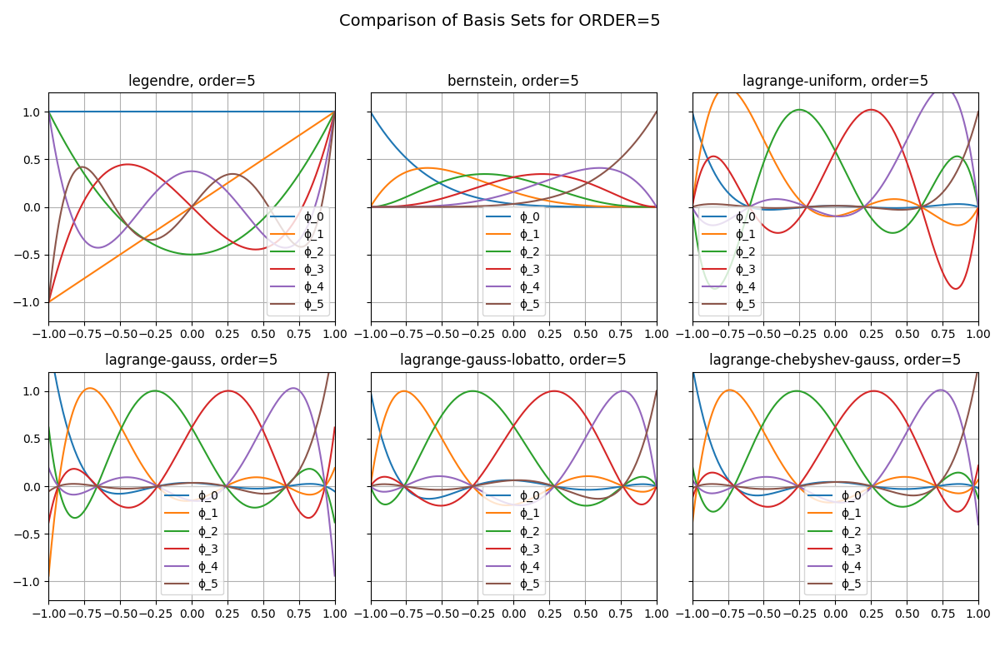

Note
Go to the end to download the full example code.
Basis Sets Visualization#
This example demonstrates how different basis sets look for polynomial orders. We compare Lagrange, Legendre, and Bernstein-type bases using different node distributions (uniform, Gauss, Gauss-Lobatto, Chebyshev-Gauss).
The basis values are sampled at the integration points (nodes), and the functions are visualized on the reference interval [-1, 1].
# Assume classes are defined in fdg
import numpy as np
from fdg import BasisSpecs, BasisType
from matplotlib import pyplot as plt
from matplotlib.axes import Axes
Helper function to plot a basis set#
def plot_basis_set(basis_type: BasisType, order: int, ax: Axes) -> None:
"""Plot basis in the set."""
basis_specs = BasisSpecs(basis_type, order)
x = np.linspace(-1, +1, 200)
v = basis_specs.values(x)
for i in range(v.shape[-1]):
ax.plot(x, v[..., i], label=f"ϕ_{i}")
ax.set_title(f"{basis_type.value}, order={order}")
ax.set_xlim(-1, +1)
ax.set_ylim(-1.2, +1.2)
ax.legend()
ax.grid(True)
def plot_basis_set_derivatives(basis_type: BasisType, order: int, ax: Axes) -> None:
"""Plot basis derivatives in the set."""
basis_specs = BasisSpecs(basis_type, order)
x = np.linspace(-1, +1, 200)
v = basis_specs.derivatives(x)
for i in range(v.shape[-1]):
ax.plot(x, v[..., i], label=f"ϕ_{i}")
ax.set_title(f"{basis_type.value}, order={order}")
ax.set_xlim(-1, +1)
ax.set_ylim(-2, +2)
ax.legend()
ax.grid(True)
Specify Config#
ORDER = 5
Compare different basis types#
Compare derivatives of different basis types#
fig, axes = plt.subplots(2, 3, figsize=(12, 8), sharey=True)
for ax, btype in zip(axes.flat, BasisType):
plot_basis_set_derivatives(BasisType(btype), order=ORDER, ax=ax)
fig.suptitle(f"Comparison of Basis Set derivatives for {ORDER=}", fontsize=14)
fig.tight_layout(rect=(0, 0.05, 1, 0.95))
plt.show()

Total running time of the script: (0 minutes 1.518 seconds)